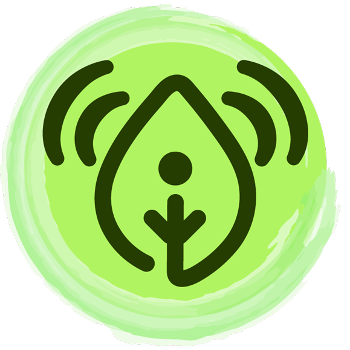

Studenti di UniTo, Dipartimento di Informatica
L'associazione mira a responsabilizzare e rendere più sostenibile la
vita di tutti i giorni in dipartimento.
- Divulghiamo conoscenza
- Sensibilizziamo sulle tematiche ambientali
- Promuoviamo idee Green